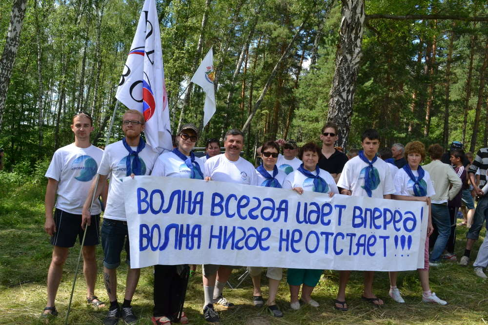
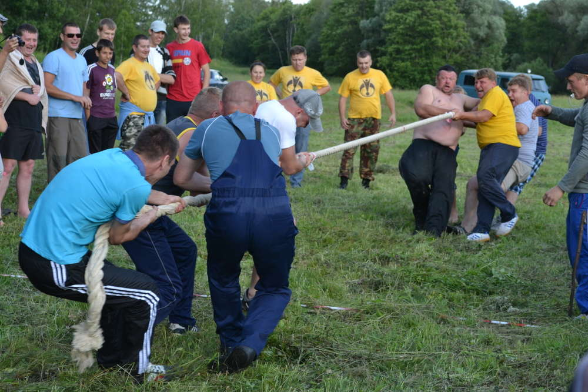
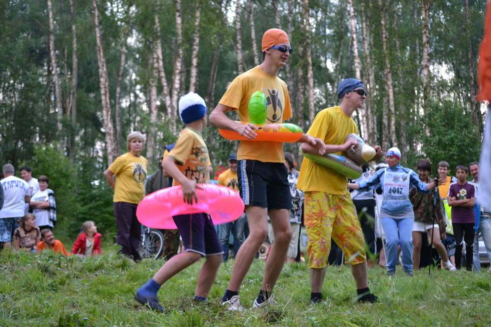
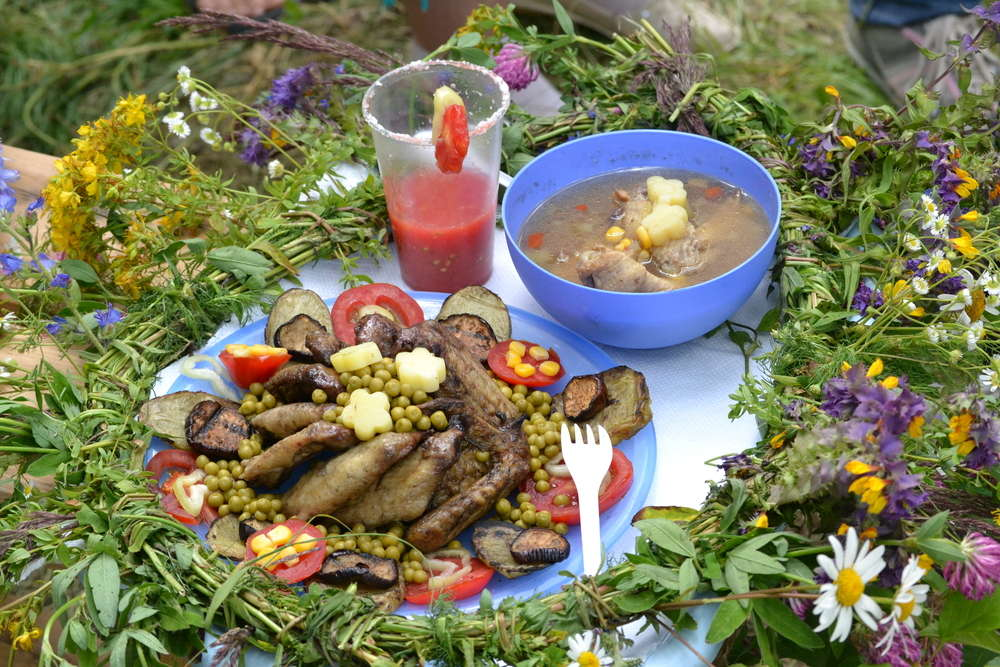
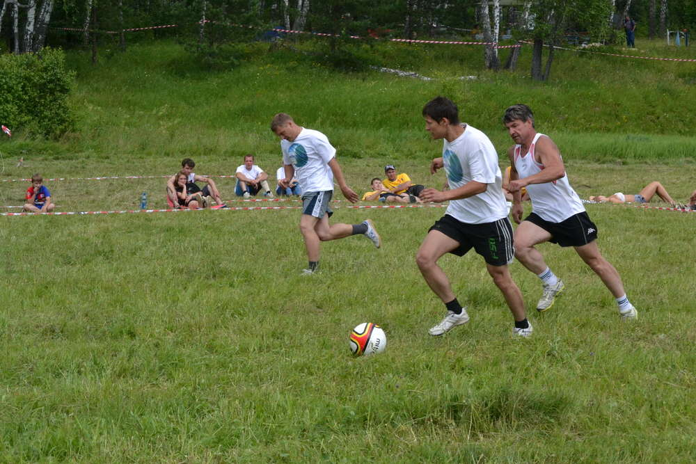
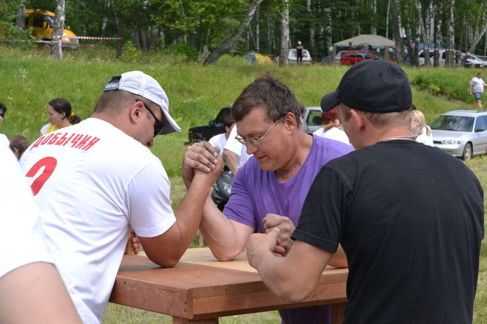
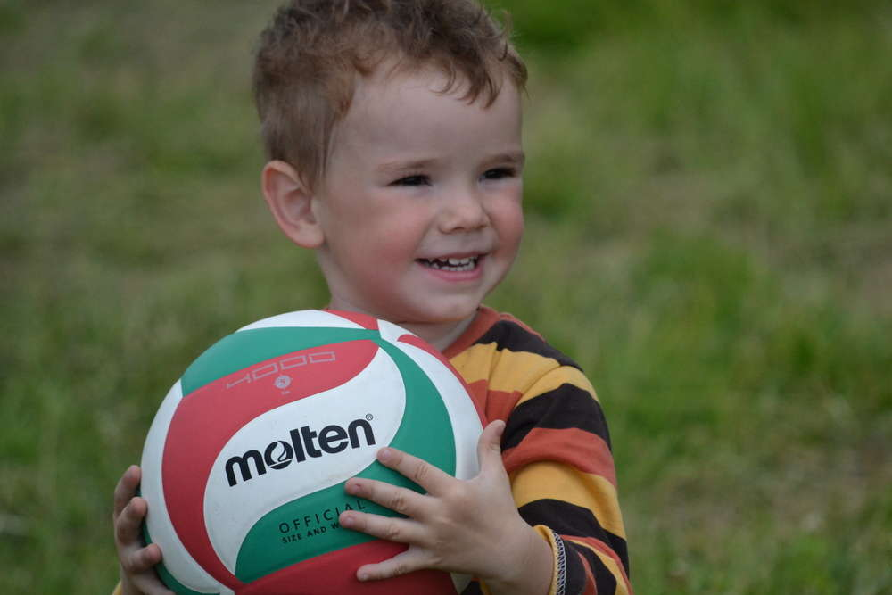
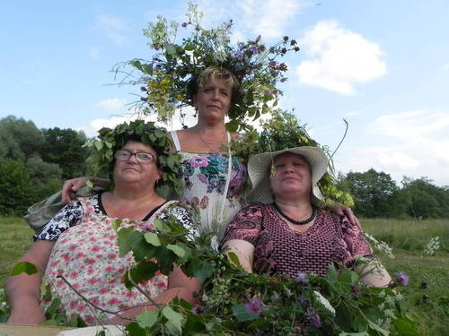
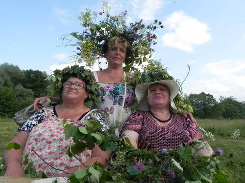

Турслет «Хомяковский брод» - 2012.
В минувшие выходные, 29 июня – 1 июля, состоялся XII спортивно-культурный слет работников предприятий и
организаций Тарусского района и членов их семей.
Сборная команда городской и районной администраций “Новая Волна” забросила свой хозяйственный десант еще
утром в пятницу. Машина, заполненная доверху необходимым инвентарем, остановилась на заросшем травой и
земляникой поле. Было очень трудно представить, что через несколько часов здесь развернется
оборудованный всем необходимым лагерь, в который смогут приехать члены команды. Первопроходцы
нервничали, все из рук валилось, да еще и дождь временами обрушивался на голову. Но через несколько
часов, когда поняли, что все получилось, настроение кардинально изменилось, чувствовалось приближение
насыщенного, неповторимого отдыха. А вместо отчаянных возгласов можно было уже услышать: “ А мне
понравилось косить, дайте еще бензина!”.

К 17:00 на поле собираются все команды-участницы турслета, становится шумно и многолюдно, под ободряющие
возгласы и апплодисменты проходит первое внеконкурсное соревнование - перетягивание каната. Болельщики
скандируют речевки своих команд. Белокурые девочки, сжав кулачки, шепчут: “Пусть Ромашка выиграет”.
Видно, каждая команда пришла с единственной целью - победить.

Первый оцениваемый жюри конкурс - “Визитка”. Главное в нем – представить свою команду ярко и креативно.
Все готовились: кто-то примерял костюм, кто-то повторял слова. В лагере “Новой волны” громким и твердым
голосом Евгений Михайлович Мальцев всех построил, организовал и вдохновил. Им, смелым, выступать
первыми: загадывать загадки, петь песни. “И запоют вместе с нами все туристы Земли!” А вот уже
загадочные ребята из команды “Фобос” покатились по траве на лыжах, поплыли в спасательных кругах в
воображаемом бассейне, подняли гири, подмели рощу и спели про инопланетян, столкнувшихся с русской
жизнью. Беззаботные и дружные “Бизоны” запели под гитару. “Ромашки” пригласили всех в гости, обещая
укрыть от неприятностей, так как согласно легенде ромашки укрывают от дождя лесных гномиков. “Не разлей
вода” продемонстрировали видеоролик о том, как они готовились к турслету. “Кактусы” устроили яркий,
костюмированный спектакль.

Утро субботы началось с духоты в палатках и вкусного завтрака. Пока капитаны команд на собрании обсуждали
правила предстоящих соревнований, одни собирались на “Силовое троеборье”: подтягиваться, качать пресс и
поднимать гирю, другие размышляли, что же можно приготовить из выданных для конкурса поваров продуктов.
Позже самые сильные и спортивные отправились играть в волейбол, а искусные хозяйственные девушки -
готовить изысканные блюда, плести венки из полевых цветов и сочинять стихи и песни.
В конкурсе поваров «Новая волна» заняла первое место, которое она поделила с командой «Кактус»,
приготовив из куриных крылышек, трех помидоров, двух картофелин, сладкого перца, баклажана, майонеза,
консервированных курурузы и горошка пять различных блюд.

Под пылающим летним солнцем бегают футболисты, многие из них целый день тренировались. И вот настал
долгожданный момент - игра! Игра идет на выбывание, каждая ошибка может оказаться решающей. Кто-то
промахивается, огорчая своих болельщиков, за что получает актуальную обидную кричалку: “Тебе в нашу
сборную нужно, только там такие играют!”, кто-то удачливый забивает, а кто-то недальновидный спорит с
судьей.

В этом году впервые за историю слета были проведены соревнования по армрестлингу. Сергей Викторович
Добычин, зам. главы районной администрации, и Марианна Новикова, главный специалист городской
администрации, успешно выступили за “Новую волну”. Марианна, не проиграв ни одной схватки, всех поразила
и запомнилась, как самая сильная девушка турслета.

Один из самых сложных с физической и с моральной точки зрения конкурсов, проходивших на турслете -
“Переправа”. Задача заключлась в том, чтобы пробежать эстафету с заданиями за наименьшее время. В этом
году нужно было попасть из винтовки в шарик, выиграть в карточной игре «21 очко», пробежать вброд по
реке и подняться на крутой берег. Со стороны это кажется не очень сложным. Но когда бежишь по реке,
спотыкаешься о камни, не можешь думать ни о чем, кроме флажка финиша и цели: ”Нам нужна только победа!”
- превознемогаешь боль, слабость, отсутствие воздуха. Непередаваемые эмоции охватывают, когда последним
рывком преодолеваешь линию финиша вместе со своими товарищами, без которых ничего бы не получилось.
Объединяясь, люди обретают возможности и силы, которые в одиночку не были им доступны.

А вечером снова смешные выступления. Команды изображают друг друга, переодеваясь в русалок, морских
царей, разработчиков космических приборов, дарят друг другу подарки. Спасибо всем за уникальность!
В воскресение утром в настроении многих уже угадовалась грусть из-за того, что скоро все закончится. В
этот день были проведены соревнования по ловле рыбы, стрельбе, метанию яиц и конкурс стенгазет. На сборе
капитанов команд обсудили прошедшие два дня, учли все замечания и внесли поправки в правила конкурсов
для следующего года.
Наступило время подводить итоги: первое место - сборная команда “Ежи”, это их седьмая победа, второе
место - команда СКБ КП ИКИ РАН “Фобос”, третье место - команда учителей Тарусской школы №1 и их
спутников “Кактусы”. “Новая волна” заняла четвертое место. Это достойный результат с наибольшим
количество промежуточных первых мест.
Но главная общая победа – три дня радости, творчества и здорового образа жизни.

Быть частью происходящего, а не просто наблюдать со стороны - важно, но турслет - место не только для
спортсменов и тех, кто любит побеждать, это место для всех. Люди, которые не участвуют в соревнованиях,
просто гуляют, жарят шашлыки, болеют за понравившуюся команду, наслаждаются теплой и дружественной
атмосферой турслета, помогают создавать ее. До встречи через год!

Статья и фото - А. Шиловская


 
